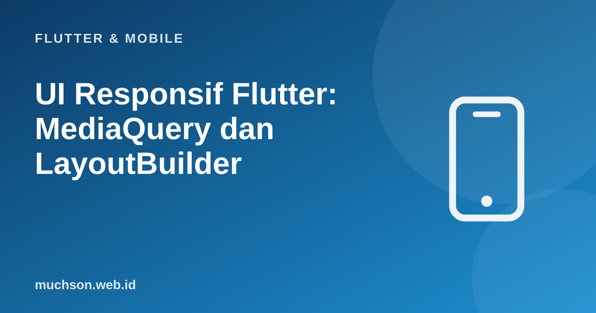

Beranda › Artikel › Flutter & Mobile
Flutter & MobileUI Responsif Flutter: MediaQuery dan LayoutBuilder
Satu aplikasi Flutter kini berjalan di ponsel kecil, tablet, lipat, jendela desktop, dan web. UI yang hanya tampak bagus di satu ukuran layar akan terasa rusak di yang lain. Responsif berarti tata letak menyesuaikan ruang yang tersedia; adaptif berarti perilaku dan komponen menyesuaikan platform dan cara input.
Sebaiknya sudah paham: widget Flutter dasar, Row dan Column

Setelah membaca dan mencoba materi ini, Anda mampu:
- membedakan MediaQuery (ukuran layar) dan LayoutBuilder (ukuran ruang induk)
- mendefinisikan breakpoint dan memilih tata letak per kelas ukuran
- memakai Flexible, Expanded, Wrap, dan AspectRatio agar elastis
- menghormati SafeArea, text scale, dan orientasi
- menguji berbagai ukuran layar
Contoh Flutter ditampilkan sebagai kode yang mengikuti dokumentasi Flutter 3.x. Logika Dart murni dijalankan sungguhan dengan Dart SDK; kode yang butuh Flutter (widget, uji widget) tidak dijalankan di halaman ini.
MediaQuery vs LayoutBuilder
| Alat | Mengukur | Pakai ketika |
|---|---|---|
| MediaQuery.sizeOf(context) | Ukuran seluruh jendela/layar | Keputusan global: pilih navigasi bawah atau samping |
| LayoutBuilder | Batas (constraints) yang diberikan induk | Komponen yang harus menyesuaikan ruangnya sendiri (kartu, grid) |
| MediaQuery.paddingOf / viewInsetsOf | Area aman dan keyboard | Menghindari notch dan keyboard |
| MediaQuery.textScalerOf | Pengaturan ukuran teks pengguna | Menjaga tata letak tetap utuh saat teks diperbesar |
Lebih baik memakai LayoutBuilder untuk komponen yang dipakai ulang: ia peduli pada ruang yang benar-benar ia dapat, bukan ukuran layar. Satu kartu di panel samping sempit harus terlihat benar walau layarnya lebar.
Breakpoint
enum KelasUkuran { ringkas, sedang, luas }
KelasUkuran kelasDariLebar(double lebar) {
if (lebar < 600) return KelasUkuran.ringkas; // ponsel
if (lebar < 840) return KelasUkuran.sedang; // tablet kecil, ponsel lipat terbuka
return KelasUkuran.luas; // tablet besar, desktop, web
}
int kolomGrid(double lebar, {double lebarKartu = 220}) {
final n = (lebar / lebarKartu).floor();
return n < 1 ? 1 : n;
}
void main() {
for (final lebar in [320.0, 411.0, 600.0, 768.0, 840.0, 1280.0, 1920.0]) {
print('lebar ${lebar.toStringAsFixed(0).padLeft(4)} -> ${kelasDariLebar(lebar).name.padRight(7)} grid ${kolomGrid(lebar)} kolom');
}
}lebar 320 -> ringkas grid 1 kolom
lebar 411 -> ringkas grid 1 kolom
lebar 600 -> sedang grid 2 kolom
lebar 768 -> sedang grid 3 kolom
lebar 840 -> luas grid 3 kolom
lebar 1280 -> luas grid 5 kolom
lebar 1920 -> luas grid 8 kolom
Tata letak yang berubah
class Beranda extends StatelessWidget {
const Beranda({super.key});
@override
Widget build(BuildContext context) {
return LayoutBuilder(builder: (context, batas) {
final kelas = kelasDariLebar(batas.maxWidth);
switch (kelas) {
case KelasUkuran.ringkas:
return Scaffold(
body: const DaftarArtikel(),
bottomNavigationBar: const NavigationBar(destinations: tujuan), // navigasi di bawah
);
case KelasUkuran.sedang:
case KelasUkuran.luas:
return Scaffold(
body: Row(children: [
NavigationRail(destinations: tujuanRail, selectedIndex: 0, extended: kelas == KelasUkuran.luas), // navigasi samping
const VerticalDivider(width: 1),
const Expanded(child: DaftarArtikel()),
if (kelas == KelasUkuran.luas) const SizedBox(width: 360, child: PanelDetail()), // panel detail berdampingan
]),
);
}
});
}
}Alat elastis
// Grid yang jumlah kolomnya menyesuaikan lebar
GridView.builder(
gridDelegate: const SliverGridDelegateWithMaxCrossAxisExtent(maxCrossAxisExtent: 220, mainAxisSpacing: 12, crossAxisSpacing: 12),
itemBuilder: (_, i) => KartuProduk(produk: daftar[i]),
itemCount: daftar.length,
)
// Tata letak yang membungkus ke baris berikutnya
Wrap(spacing: 8, runSpacing: 8, children: [for (final t in tag) Chip(label: Text(t))])
// Batasi lebar konten agar teks tidak terlalu panjang di layar lebar
Center(child: ConstrainedBox(constraints: const BoxConstraints(maxWidth: 720), child: isiArtikel))
// Rasio tetap untuk gambar/video
AspectRatio(aspectRatio: 16 / 9, child: Image.network(url, fit: BoxFit.cover))
// Area aman: hindari lekukan layar dan bilah sistem
SafeArea(child: konten)
// Teks yang tidak meluap
Flexible(child: Text(judul, maxLines: 2, overflow: TextOverflow.ellipsis))Aksesibilitas ukuran
- Text scale: pengguna dapat memperbesar teks hingga 200%+. Hindari tinggi tetap pada wadah berisi teks; pakai constraints minimum atau biarkan wadah tumbuh.
- Area sentuh: minimal 48x48 dp untuk tombol dan ikon.
- Orientasi: pertimbangkan lanskap; jangan mengunci portrait tanpa alasan.
- Keyboard: gunakan
resizeToAvoidBottomInsetdanSingleChildScrollViewagar kolom isian tidak tertutup. - Input: di desktop dan web dukung mouse (hover), keyboard (fokus dan pintasan), dan scroll.
Menguji
- Gunakan Device Preview (paket device_preview) atau jendela yang dapat diubah ukurannya di Chrome/desktop.
- Uji widget dengan ukuran layar tertentu:
tester.view.physicalSize = const Size(1200, 800)lalupumpWidget. - Cek tiga ukuran minimal: 360x640 (kecil), 768x1024 (tablet), 1280x800 (desktop).
- Aktifkan font terbesar di pengaturan perangkat dan periksa tidak ada overflow (garis kuning-hitam).
1. Tentukan navigasi untuk lebar 500, 700, dan 1000.
2. Berapa kolom grid untuk lebar 900 dan lebarKartu 220?
3. Mengapa membatasi lebar maksimum teks bacaan?
4. Apa bedanya responsif dan adaptif?
- MediaQuery untuk keputusan global; LayoutBuilder untuk komponen sesuai ruang induknya.
- Tentukan breakpoint di satu tempat (compact/medium/expanded).
- Gunakan GridView max extent, Wrap, Flexible, ConstrainedBox, AspectRatio.
- Hormati SafeArea, text scale, area sentuh, keyboard; uji tiga ukuran.
Tanya jawab
Apakah perlu paket responsif pihak ketiga?
Bagaimana dengan ukuran font?
Bagaimana mendukung web dan desktop?
Referensi
- Flutter: Adaptive and responsive design
- Material 3: Window size classes
- API: LayoutBuilder
- Flutter: Accessibility